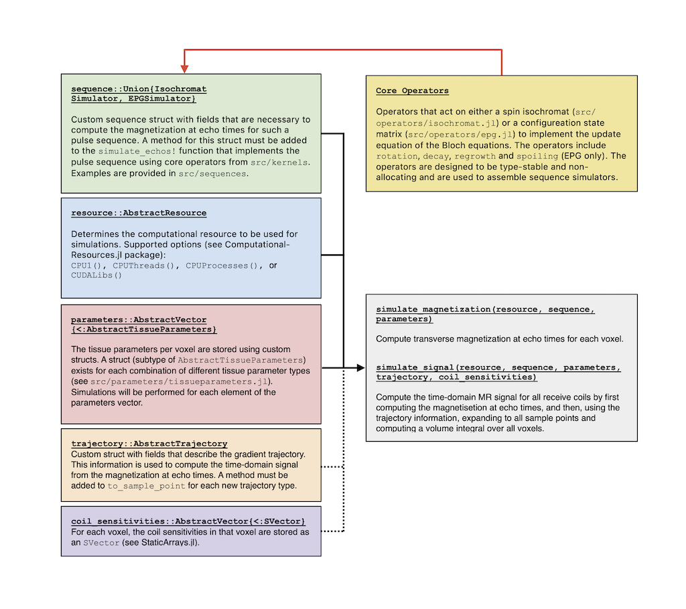

Overview
MR Signal Equation
In Magnetic Resonance Imaging (MRI), the complex signal $s$ at time point $t$ of a pulse sequence can be modelled as
\[s(t) = \int_V c(\vec{r})m_{\perp}(\vec{r},t)d\vec{r}.\]
Here $c$ is the spatially-dependent receive sensitivity of the coil used for signal reception, $V$ is field-of-view of the receive coil and $m_{\perp}(\vec{r},t)$ is the (complex) transverse magnetization at the spatial location $\vec{r}$ at time point $t$.
The dynamical behaviour of the magnetization is described by the Bloch equations and depends on the pulse sequence used in the acquisition, tissue properties (e.g. $T_1$, $T_2$ and proton density) and system parameters (e.g. $B_0$ and $B_{1}^{+}$ inhomogeneities). Given a pulse sequence as well as tissue- and system parameters in a voxel with spatial location $\vec{r}$, the transverse magnetization $m_{\perp}(r,t)$ at arbitrary time points $t$ can be obtained by numerical integration of the Bloch equations (i.e. Bloch simulations). Note that $m_{\perp}(\vec{r},t)$ can in fact be separated as
\[m_{\perp}(\vec{r},t) = m(\vec{r},t)e^{-2\pi i \vec{k}(t)\cdot \vec{r}},\]
where $m$ is the transverse magnetization without any (in-plane / in-slab) gradient encoding, and $\vec{k}(t)$ is the gradient trajectory used in the acquisition. That is, $m$ and the gradient encoding $e^{-2\pi i \vec{k}(t)\cdot \vec{r}}$ can be computed separately.
To simulate $s$ in practice, spatial discretization must first be performed. Divide the field-of-view into $N_{v}$ voxels spatial coordinates $\vec{r}_{1}, \ldots, \vec{r}_{N_v}$. Assume each voxel to have the same volume $\Delta V$. The signal $s(t)$ is then computed as the discrete sum
\[s(t) = \sum_{j=1}^{N_v} c(\vec{r}_j)m(\vec{r}_j,t)e^{-2\pi i \vec{k}(t)\cdot \vec{r}_j} \Delta V.\]
BlochSimulators provides tools to perform Bloch simulations (i.e. numerical integration of the Bloch equations) for computing $m$ and to evaluate the discrete sum required for computing the signal $s$ at desired sample times.
Design philosophy
Whereas other Bloch simulation toolboxes typically provide a single, generic simulator that can be used for arbitrary pulse sequences, with BlochSimulators one is encouraged to assemble pulse sequence-specific simulators. The philosophy behind this design choice is that sequence-specific simulators can incorporate knowledge of repetitive patterns in pulse sequence (e.g. RF excitation waveform and/or gradient waveforms) to improve the runtime performance of the simulator.
A second important design philosophy is that, when one intends to simulate MR signal for some numerical phantom, first the magnetization $m$ at echo times in all voxels is computed (without taking into account the effects of the gradient trajectory). If $m_e$ is the transverse magnetization in one voxel at some echo time of the pulse sequence, then the transverse magnetization at the $j$-th sample point of that readout relative to the echo time can be computed analytically as
\[m_s = m_e \left(e^{-\frac{\Delta t}{T_2}} e^{-2\pi i B_0}\right)^j e^{-2\pi i \vec{k}(t) \cdot \vec{r}},\]
where $\Delta t$ is the time between sample points of the readout.
Given $m$ at echo times, the signal $s$ is thus computed by expanding the magnetization to all sample times and evaluating the discrete sum while taking into account the gradient trajectory (and coil sensitivities).
Note that the (discretized) signal equation closely resembles a Discrete Fourier Transform. In many MRI applications, the Fast Fourier Transform (FFT) is used to transform back-and-forth between the image domain and the k-space domain. In BlochSimulators, we intentionally do not rely on the FFT since it does not allow to take into account dynamical behaviour during readouts (e.g. $T_2$ decay and/or $B_0$-induced rotations).
Simulating magnetization at echo times
BlochSimulators supports two different models for performing Bloch simulations: the individual isochromat model and the extended phase graph model. For both models, basic operator functions are implemented (see src/operators/isochromat.jl and src/operators/epg.jl) in a type-stable and non-allocating fashion. By combining these operators, simulators for entire pulse sequences can be assembled. To this end, a user must define a new struct that is a subtype of either IsochromatSimulator or EPGSimulator with fields that are necessary to describe the pulse sequence (e.g. flip angle(s), TR, TE, etc.). A method must then be added for this new type to the simulate_magnetization! function which, by combining the fields of the struct with the basic operators, implements the magnetization response of the sequence. See src/sequences/_interface.jl for additional information and requirements. Examples of sequences are provided in examples/sequences.
To perform simulations, tissue parameter inputs must be provided. Custom structs for different combinations of tissue properties are introduced in this package (all of which are subtypes of AbstractTissueProperties). See src/parameters/tissueparameters.jl for more information.
Given a sequence struct together with a set of input parameters for each voxel (currently the parameters must be an ::AbstractArray{<:AbstractTissueProperties}), the magnetization at echo times in each voxel is obtained with the function call
magnetization = simulate_magnetization(resource, sequence, parameters),
where resource is either CPU1(), CPUThreads(), CPUProcesses() or CUDALibs() (see ComputationalResources.jl). This function can also be used in the context of MR Fingerprinting to generate a dictionary.
Simulating the MR signal
To compute the MR signal $s$ given the magnetization at echo times in all voxels, the magnetization_to_signal function is used (see src/simulate/signal.jl). By default, for each timepoint t a function magnetization_to_signal! is called internally which computes the magnetization at sample time t for each voxel and evaluates the volume integral
\[\sum_{j=1}^{N_v} c(\vec{r}_j)m(\vec{r}_j,t)e^{-2\pi i \vec{k}(t)\cdot \vec{r}_j} \Delta V.\]
In order to evaluate the above expression, information from the gradient trajectory (i.e. $k(t)$) is required. For each different type of k-space trajectory, a new struct (subtype of AbstractTrajectory) must be introduced with fields that describe that particular gradient trajectory. A new method must then be added to the to_sample_point function which is used to compute
\[m(\vec{r}_j,t)e^{-2\pi i \vec{k}(t)\cdot \vec{r}_j}\]
for sample points other than the echo times. See src/trajectories/_interface.jl for more details. Example implementations for Cartesian and radial trajectories are provided.
Given the magnetization at echo times in all voxels (stored in magnetization), the signal at all sample times is computed with the function call
signal = magnetization_to_signal(resource, magnetization, parameters, trajectory, coil_sensitivities).
Alternatively, the signal can be computed with the simulate function as
signal = simulate_signal(resource, sequence, parameters, trajectory, coil_sensitivities).
We note that the implementation of to_sample_point for a new trajectory should be type-stable and non-allocating. In that case, the signal computation will likely run on different computational resources following the magnetization_to_signal implementation. In the default implementation magnetization_to_signal, different compute threads (i.e. when running in multi-threaded mode or in GPU) are assigned to different sample times. The benefit of this approach is that no communication between threads is required. However, from a memory-access point-of-view this approach may not necessarily be optimal. The optimal approach may depend on the actual gradient trajectory and computational resource. If more "optimal" implementations are discovered, methods may be be added magnetization_to_signal to use more optimized implementations for specific combinations of trajectories and resources.

GPU Compatibility
The operator functions for both the isochromat model and the extended phase graph model have been designed to be type-stable and non-allocating. A proper combination of these operators should make it possible to have type-stable and non-allocating simulations for entire pulse sequences. Besides being beneficial for performance on CPU hardware, this also makes it possible to run simulations on GPU cards (NVIDIA) using the CUDA.jl.
To run simulations on a GPU card, the sequence, trajectory, parameters and coil_sensitivities must be sent to the GPU first. For this purpose, a convenience function gpu is exported.
Also note that by default, Julia arrays have double precision (Float64 or ComplexF64) upon construction. To convert to single precision (Float32), a convenience function f32 is exported as well.
For example, given some sequence, gpu(f32(sequence)) will recursively convert its fields to single precision and convert any regular Arrays to CuArrays.
Todo
- For 3D applications, storing the magnetization at echo times for all voxels may not be feasible. The computations can be performed in batches though but such batching is currently not implemented.
- Add diffusion operators to both the isochromat and extended phase graph models.
- Add magnetization transfer model.
- Add spiral and EPI trajectories.
- ~~Store
parametersasStructArrayrather thanAbstractArray{<:AbstractTissueProperties}.~~ - ~~Perhaps separate the spatial coordinates from the tissue properties.~~